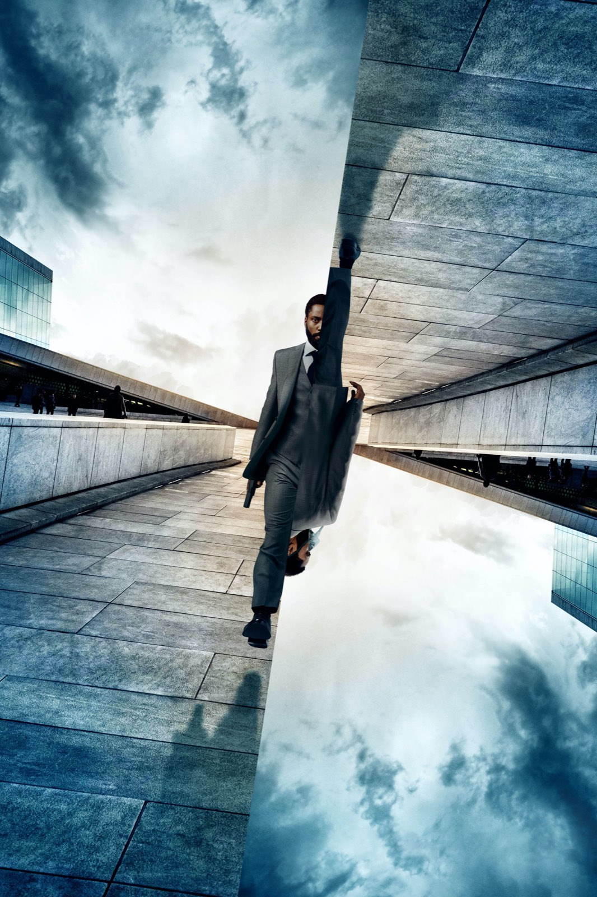

Su Prime Video
Cosa vedere su Prime Video: recensioni, curiosità e approfondimenti della redazione su film e serie in abbonamento, con la disponibilità aggiornata.
Film e serie su Prime Video

The Boys – Stagione 1
Un ragazzo con le dita della fidanzata ancora strette nelle sue e un aereo lasciato precipitare da chi doveva salvarlo

The Boys – Stagione 2
Stormfront, un Homelander che perde il controllo e una stagione che parte piano e dalla terza puntata non si ferma più

The Boys – Stagione 3
Con Soldier Boy, Homelander trova qualcuno che gli somiglia fin troppo: è la stagione migliore della serie, ma il finale frena

The Boys – Stagione 4
Homelander non è mai stato così spaventoso e il ritorno al laboratorio vale la stagione, però i Boys girano in tondo fino al finale

Fast & Furious 5 (2011): la recensione
Dal garage alla rapina di Rio: perché il quinto capitolo, con Dwayne Johnson e un caveau trascinato per la città, resta il più compatto della serie

Tenet: la trama e il finale spiegati (spoiler)
Un oggetto che viaggia all'indietro, una battaglia in due direzioni e un amico che sapeva già tutto: come si rimettono in fila i pezzi del film di Christopher Nolan

The Boys – Stagione 5
Homelander al potere, Butcher con un'ultima arma e otto episodi per chiudere tutto: la fine di The Boys è feroce, cupa e sbilanciata

Project Hail Mary
Lord e Miller portano al cinema il romanzo di Andy Weir: hard sci-fi per tutti, un Gosling in stato di grazia e un alieno che ruba la scena
The Housemaid (Una di famiglia): la recensione
Trentacinque milioni di budget, oltre quattrocento di incasso: il thriller domestico con Sydney Sweeney e Amanda Seyfried che ha riportato in sala un genere dato per spacciato
28 anni dopo: la recensione del film di Boyle
Danny Boyle e Alex Garland tornano al virus della rabbia con un film girato in buona parte con un iPhone 15 Pro Max e con un'ambizione più larga dell'horror
Le piattaforme cambiano spesso: in ogni articolo trovi la data dell'ultimo aggiornamento. Altre piattaforme: Netflix · Disney+ · Apple TV · HBO Max · Sky e NOW